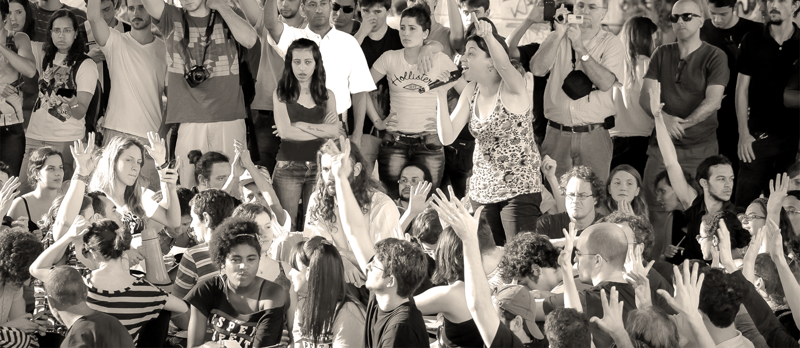
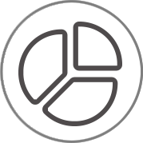
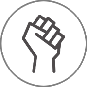
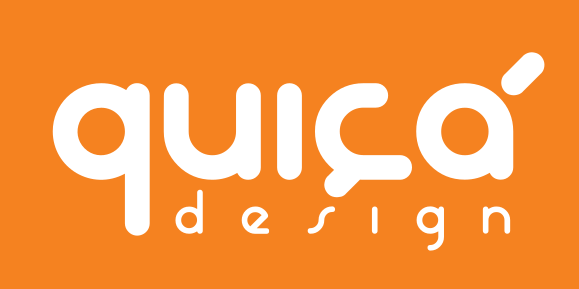

CC BY-SA | Foto: upslonCom base em dados obtidos no Portal da Transparência, o design desta plataforma visa facilitar a inclusão do cidadão nas discussões sobre os orçamentos da cidade de São Paulo. Em um futuro próximo, esse experimento poderá ser realizado em qualquer cidade.
Nosso intuito em médio prazo é fazer com que os dados obtidos aqui façam parte do processo de participação cidadã que foi retomado na gestão 2013-2016 com Ciclo Participativo de Planejamento e Orçamento – CPPO e que tende a continuar na atual gestão.

Acreditamos que a informação é o primeiro passo para a participação cidadã e por esse motivo procuramos projetar esta interface de modo que o cidadão discuta e avalie as perdas e ganhos de cada opção a ser escolhida
Periodicamente, novas campanhas de votação serão lançadas e permanecerão por tempo suficiente para que se crie uma discussão em um ambiente moderado. Juntos, construiremos esse ambiente de maneira saudável e respeitosa

O Brasil vive hoje um momento político que requer ainda mais a nossa luta. O poder só será distribuído quando o cidadão for capaz de opinar e perceber que sua voz está sendo ouvida
Somos designers brasileiros e estamos ajudando a projetar o Brasil. Se você se interessou e está a fim de colaborar com esse projeto, ou deseja obter mais informações, ficaremos felizes com o seu contato: contato@naopizza.net
Apoio: 
FAPESP - Processo 2014/04168-6
Nota: A FAPESP não se responsabiliza pelo conteúdo exposto nesta plataforma, sendo de total responsabilidade de seus idealizadores: Antonio Lourenço, Adeline Gil, Matheus Maia.